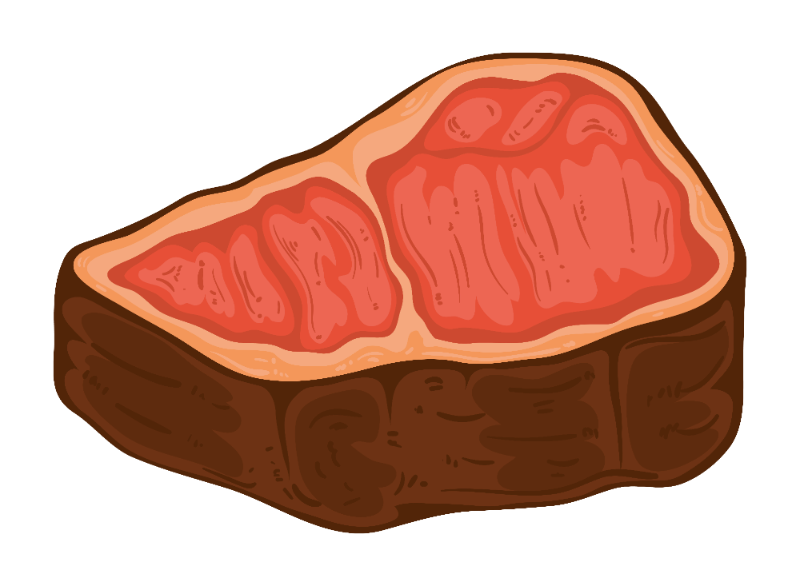

Một chiếc lò, một triết lý nấu
Ở Texas, người ta nói: "thịt ngon không phải nấu nhanh, mà là nấu đúng." Một tảng brisket cứng đầu cần mười hai giờ khói sồi mới chịu mềm ra như bơ. Đó không phải sự sốt ruột — đó là sự tôn trọng nguyên liệu.
Duy's Oven ra đời để đưa triết lý ấy về Việt Nam: một chiếc lò offset smoker thép dày, khoang đốt tách rời khoang nấu, để khói và nhiệt đi một hành trình dài trước khi chạm vào thịt. Không khí nóng, không lửa táp — chỉ có khói thơm bao bọc.
Mỗi chiếc lò được chế tác thủ công, cân chỉnh để giữ nhiệt ổn định suốt buổi nấu dài, phù hợp cả gỗ sồi nhập lẫn than đước miền Tây.

Được sinh ra cho khói thật
Không phải bếp gas giả khói, không phải nồi điện. Đây là lò đốt củi thật — nơi hương khói thấm vào từng thớ thịt.
Khoang đốt tách rời
Lửa cháy ở khoang riêng, chỉ có khói và khí nóng đi vào khoang thịt. Không cháy xém, không vị khét — đúng nguyên lý offset.
Giữ nhiệt bền bỉ
Thép dày 100kg tích nhiệt như một bánh đà — nhiệt khoang dao động ít, giữ mốc 110–135°C suốt nhiều giờ mà không cần canh liên tục.
Hai tầng, đa năng
Vỉ dưới 94×47cm cho tảng lớn, vỉ trên 94×34cm cho cá và rau. Một mẻ nấu được nhiều món với các vùng nhiệt khác nhau.
Khói đi đường vòng
Bí mật của lò offset nằm ở hành trình của khói: từ khoang đốt, luồn qua khoang thịt, rồi thoát lên ống khói — bao trọn miếng thịt trong dòng khí nóng đối lưu.
Đốt & sinh khói
Gỗ sồi cháy trên nền than đước ở khoang đốt bên hông, tạo ra khí nóng và khói thơm. Van gió điều tiết lượng oxy.
Đối lưu qua thịt
Khí nóng bị hút sang khoang nấu, trôi ngang qua các tầng vỉ. Thịt chín bằng khí nóng bao quanh, không bị lửa táp trực tiếp.
Thoát qua ống khói
Khói cũ thoát lên ống khói cao, kéo theo luồng khí mới — tạo dòng đối lưu tự nhiên giữ lò luôn "thở".
Sồi cho hương, đước cho nền
Hai loại nhiên liệu, hai vai trò. Kết hợp đúng tỷ lệ là chìa khóa của khói sạch và nhiệt ổn định.
Gỗ sồi (Oak)
Gỗ chủ lực của Texas BBQ. Cháy đượm, khói trung tính và thanh — đủ đậm cho thịt bò, không gắt như hickory. Mỗi khúc ~33cm vừa khít khoang đốt, cho "thin blue smoke" — làn khói xanh mỏng là dấu hiệu của khói sạch.
Than đước Việt Nam
Than đước miền Tây cháy lâu, nhiệt cao và ổn định, ít khói — lý tưởng làm lớp than nền giữ nhiệt giữa các lần thêm củi. Sồi đặt lên nền than đỏ sẽ bắt lửa sạch, hạn chế khói trắng đục mang vị đắng.
Điều gì xảy ra bên trong miếng thịt?
Xông khói không phải phép màu — đó là một chuỗi phản ứng hoá học có thể giải thích. Hiểu chúng, bạn sẽ điều khiển được kết quả.
Khói gỗ thực ra là gì?
Khi gỗ sồi nóng lên trên nền than mà không cháy bùng, nó trải qua quá trình nhiệt phân (pyrolysis) — ba thành phần chính của gỗ phân rã ở các mức nhiệt khác nhau, mỗi loại sinh ra một nhóm hương vị riêng.
Lignin → hương khói cổ điển
Lignin (chất "keo" của gỗ) phân rã ở ~350–450°C, tạo ra các hợp chất phenol — linh hồn của mùi khói BBQ.
Guaiacol — khói, hun Syringol — mùi khói đặc trưngCellulose & hemicellulose → màu & vị ngọt
Phân rã ở ~200–350°C thành các carbonyl và đường khử — góp phần tạo màu nâu bóng cho vỏ thịt và chút ngọt dịu.
Carbonyl — tạo màu Furan — ngọt, caramel"Thin blue smoke" là khói sạch. Khi gỗ cháy đủ oxy, hạt khói cực mịn tán xạ ánh sáng thành màu xanh mờ. Khói trắng đục = hạt to, lẫn nhựa và acid chưa cháy hết → bám vị đắng, hắc.
Bốn phản ứng định hình miếng thịt
Trong nhiều giờ ở nhiệt thấp, miếng thịt biến đổi theo nhiệt độ lõi — mỗi mốc nhiệt mở khoá một phản ứng. Đây là lý do "low & slow" không thể vội.
① Collagen → gelatin (chìa khoá độ mềm)
Mô liên kết dai (collagen) thuỷ phân thành gelatin từ ~65°C trở lên, nhưng cần thời gian. Gelatin giữ nước, cho cảm giác "mềm như bơ", mọng. Đạt độ mềm hoàn hảo ~90–96°C lõi.
② Vòng khói hồng (smoke ring)
Khí NO từ khói thấm vào bề mặt thịt ẩm, gắn với myoglobin tạo sắc tố hồng bền nhiệt. Vòng khói ngừng lớn khi lõi vượt ~60°C — nó chỉ là dấu hiệu thẩm mỹ, không tạo vị.
③ Maillard → lớp vỏ (bark)
Ở bề mặt nóng ~140°C, acid amin + đường khử phản ứng tạo vỏ nâu đen và hàng trăm hợp chất hương. Cùng khói phenol và gia vị, đây chính là lớp "bark" trứ danh.
④ Mỡ tan (rendering)
Mỡ giắt trong thớ tan dần, tự "tưới" làm thịt bóng và béo ngậy từ bên trong.
Vì sao bộ não mê khói đến vậy?
Cái ngon của thịt xông khói là sự cộng hưởng của nhiều tầng kích thích giác quan xảy ra cùng lúc — điều mà không cách nấu nhanh nào tái tạo được.
Tầng hương — phenol bám sâu
Guaiacol và syringol bám vào lớp mỡ và bề mặt ẩm, len vào vài milimet đầu của thịt — tạo mùi khói lưu lại rất lâu trên vòm miệng.
Tầng vị — umami bùng nổ
Maillard và sự phân giải protein trong nhiều giờ giải phóng glutamate và nucleotide — chính là vị umami đậm đà, "ngọt thịt".
Tầng kết cấu — tương phản hoàn hảo
Vỏ bark giòn, hơi dai bao ngoài; bên trong là thớ thịt mọng gelatin tan trong miệng. Sự tương phản này khiến mỗi miếng thú vị hơn.
Hiệu ứng "khói = an toàn & no đủ". Mùi khói gắn với ký ức tổ tiên về lửa và thức ăn được nấu chín — một phần khiến ta thấy dễ chịu khi ngửi mùi BBQ.
Giá trị dinh dưỡng — và cách ăn khôn ngoan
Thịt xông khói low & slow giữ được nhiều giá trị, nhưng cũng cần hiểu đúng mặt lợi và hại để thưởng thức bền vững.
Điểm cộng
Protein hoàn chỉnh dồi dào cho cơ bắp. Gelatin (từ collagen) giàu glycine, proline — tốt cho khớp, da, đường ruột. Nấu chậm khiến phần lớn mỡ thừa chảy ra ngoài, nhẹ hơn chiên rán. Ướp kiểu Texas chỉ muối tiêu — không đường, không phụ gia.
Cần lưu ý
Khói chứa một lượng PAH (hydrocarbon thơm) và bề mặt cháy sinh HCA — không có lợi nếu ăn quá nhiều. Lượng muối trong lớp vỏ cũng đáng kể.
Ăn ngon & lành: giữ "thin blue smoke" (khói sạch ít PAH hơn), nấu nhiệt thấp (low & slow tạo ít HCA hơn nướng lửa to), cắt bỏ phần cháy đen quá mức, và xem BBQ là món thưởng thức — không ăn hằng ngày.
* Con số tham khảo, thay đổi theo phần thịt & độ nạc/mỡ.
Sáu bước của bậc thầy pitmaster
Triết lý Texas tối giản đến bất ngờ: muối, tiêu, khói sồi và thời gian. Không sốt ướp cầu kỳ — để nguyên liệu và lửa tự lên tiếng.
Ướp đơn giản kiểu "Dalmatian rub"
Công thức huyền thoại của Central Texas: muối hột và tiêu đen xay thô, tỷ lệ 1:1. Phủ đều quanh tảng thịt, để thịt nghỉ ở nhiệt phòng ~45 phút trước khi vào lò để vỏ bám gia vị tốt hơn.
Muối hộtTiêu đen thôTỷ lệ 1:1Dựng nền than, mồi sồi
Nhóm ~4kg than đước cho đỏ đều (tuyệt đối không dùng xăng/dầu — ám mùi). Mở van gió 100% lúc đầu, đặt 2 khúc sồi lên nền than. Chờ lò đạt và ổn định ở 110–135°C rồi mới đưa thịt vào.
Than nền 4kgVan gió 100% lúc nhómSăn lùng "thin blue smoke"
Đây là kỹ năng quan trọng nhất. Khói phải mỏng và hơi xanh, gần như vô hình — đó là khói sạch. Khói trắng đục, cuồn cuộn nghĩa là lửa thiếu oxy, sẽ bám vị đắng. Thêm sồi từng khúc một (~mỗi 45–60 phút), khi than vẫn đỏ. Điều tiết nhiệt bằng van gió khoang đốt, để ống khói luôn mở.
Khói xanh mỏngThêm 1 khúc/lầnỐng khói mở 100%Kiên nhẫn qua điểm khựng nhiệt
Quanh 68–77°C lõi, nhiệt độ thịt sẽ khựng lại hàng giờ — đó là "the stall", do nước bốc hơi làm mát bề mặt. Đừng hoảng, đừng tăng lửa. Bạn có thể chờ, hoặc dùng "Texas crutch": bọc tảng thịt bằng giấy thịt (butcher paper) để vượt stall nhanh hơn, đổi lại vỏ sẽ mềm hơn một chút.
Stall ~68–77°CBọc giấy thịt (tùy chọn)Nấu theo nhiệt lõi, không theo đồng hồ
Thời gian chỉ là ước lượng — nhiệt độ lõi mới quyết định. Brisket "mềm như bơ" ở ~96°C; sườn bò ~93°C; sườn heo ~91°C. Dùng nhiệt kế que cắm vào phần dày nhất. Phép thử cuối: que xiên đâm qua không lực cản.
Brisket 96°CSườn bò 93°CSườn heo 91°CĐừng cắt vội — hãy để thịt nghỉ
Bước bị xem nhẹ nhất nhưng quyết định độ mọng. Lấy thịt ra, bọc hờ và để nghỉ 30–60 phút (tảng lớn có thể lâu hơn). Thớ thịt sẽ thư giãn và tái hấp thu nước. Cắt ngang thớ, và bạn sẽ thấy vòng khói hồng đặc trưng dưới lớp vỏ đen — huân chương của một mẻ khói đúng bài.
Nghỉ 30–60 phútCắt ngang thớBảng nhiệt & thời gian từng loại thịt
Số liệu chuẩn Texas cho lò Duy's Oven, dùng gỗ sồi. Thời gian là ước lượng — luôn nấu theo nhiệt lõi thực đo.
| Loại thịt | Nhiệt khoang | Nhiệt lõi đạt | Thời gian | Ghi chú |
|---|---|---|---|---|
| Brisket — ức bò | 121°C | 96°C | ~12 giờ | Bọc giấy ở 74°C lõi |
| Sườn bò (short ribs) | 135°C | 93°C | ~8 giờ | Texas thường không bọc |
| Sườn heo (spare ribs) | 121°C | 91°C | ~6 giờ | Khung 3-2-1 kinh điển |
| Cá hồi (hot smoke) | 95°C | 60°C | ~3 giờ | Đạt 60°C lõi là lấy ra ngay |
| Vịt nguyên con | 135°C | 77°C | ~5 giờ | Châm da cho ráo mỡ |
Muốn tự thử kết hợp? Mở mô phỏng tương tác để xem khói, nhiệt và màu thịt thay đổi theo thời gian.
Học vận hành lò trong 10 phút
Mô phỏng tương tác Duy's Oven cho bạn chỉnh van gió, lượng củi và vị trí thịt — rồi xem khói bay, nhiệt lên và miếng thịt đổi màu theo từng giờ, có cả lời đọc hướng dẫn.
Mở mô phỏng tương tác →